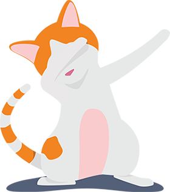
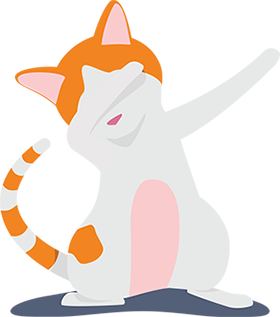

MADAM NORMA
A cat web developer

A cat web developer
Come sono finita a fare la web developer dopo 3 anni di laurea e 5 di carriera nell'organizzazione di eventi,
quando ero l'unica persona delle superiori a sapere cosa avrei fatto da grande.
Scopri la mia storia
Ho vissuto con diversi maestri Zen – erano tutti dei gatti.
Eckhart Tolle
I gatti sono animali molto speciali che adorano la propria libertà e
indipendenza tanto quanto giocare e divertirsi insieme ad altri animali.
Ecco le mie skills.
I gatti hanno una vita perfetta. Il mio progetto è rimanese gatto per sempre.
Accogliere un gatto rende la vita più piacevole e divertente.
Lo sapevano bene già nell’antico Egitto che li veneravano al punto di considerarli sacri.
I gatti sono animali simpatici e molto enigmatici, capaci di farci compagnia senza dovergli dedicare tantissimo tempo e sforzo.
Ad esempio i gatti adorano i loro peluches
Non essere geloso, sappi che un peluche può rendere molto felice un gatto,
a tal punto da farglielo abbracciare per molto tempo e convertirlo nel suo migliore amico.
Tra le incredibili abilità che possiedono i gatti, queste sono solo alcune
I gattini nascono con gli occhi chiusi.
Li aprono dopo circa sei giorni, danno un’occhiata in giro,
poi li chiudono di nuovo per la maggior parte della loro vita.
Ecco perchè potrei non vedere subito le tue mail.